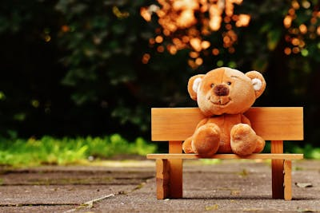
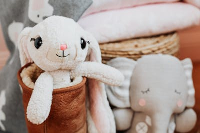
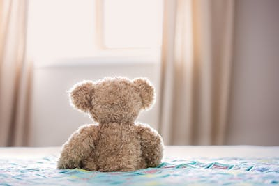
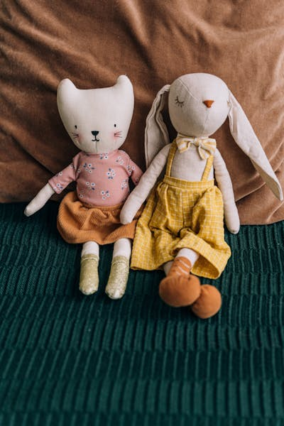

The friendly crew of the Kyiv Board Game Club!

Role: Club President
Mr. Bear has been running game nights since 2020. He loves strategy games like Catan and Terraforming Mars. He always makes sure everyone feels welcome at the table and knows the rules before the game starts.

Role: Events Coordinator
Bunny organizes all the tournaments and special events. Her favorite games are Codenames and Dixit. She makes sure there are enough snacks for every game night and that the schedule runs smoothly.

Role: Game Teacher
Little Ted is patient and kind. He teaches beginners how to play their first board games. His specialty is explaining complex rules in a simple way. He recommends Ticket to Ride as the best starter game.

Role: Social Media Team
Kit and Hop handle the club's Instagram and Facebook pages. They take photos of game nights, post updates about upcoming events, and share board game reviews. Their favorite game to photograph is Wingspan.